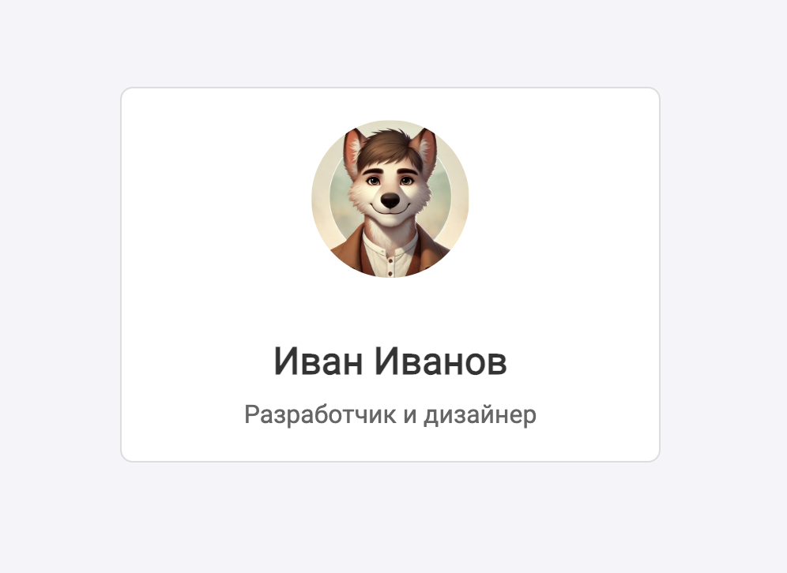

← На главную
Создайте карточку профиля с изображением, заголовком и текстом, используя правила
блочной модели для стилизации. Отработайте внутренние и внешние отступы, а также
размеры и границы.

index.html
Добавьте код для структуры карточки профиля:
- Изображение профиля (лежит в папке assets)
- Заголовок второго уровня: имя пользователя Иван Иванов.
- Описание: параграф с коротким текстом «Разработчик и дизайнер».
app.css
Оформите карточку профиля по следующим правилам:
-
Карточка профиля:
- должна быть шириной
300px
- с внутренними отступами
20px
- цвет фона белый
- граница светло-серого (
#ddd) цвета, тонкая и сплошная
-
все содержимое должно быть выровнено по центру (для этого используйте свойство
text-align: center)
- скругленные углы с помощью свойства
border-radius: 8px
-
Изображение профиля:
- ширина и высота должны быть
100px
-
задайте круглую форму с помощью свойства
border-radius: 50%
- нижний отступ для разделения с текстом 15px
-
Имя профиля:
- размер шрифта
24px
- цвет шрифта
#333
- отступ снизу
10px
-
Описание профиля:
- размер шрифта
16px
- цвет шрифта
#666
- отступы отсутствуют